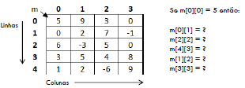

Matrizes

Created by Fernando Marques
Aula de Hoje
- Formas de facilitar a mudança de tamanho
- Vetores multidimensionais
- Declaração e Inicialização de Matriz
- Acessando Elementos da Matriz
Facilitando mudanças no tamanho
const int tam = 10;
int main(){
int vet[tam];
for(i=0; i < tam; i++){
vet[i] = i;
}
}
Vetores Multidimensionais
- Vimos como utilizar vetores com apenas uma dimensão
- Vetores podem possuir qualquer número de dimensões
tipo vetor[dim1] [dim2] ... [dimn]
Definição
- Matriz é um vetor cujos itens também são vetores
- Um vetor pode ter qualquer número de dimensões, a matriz é um vetor bidimensional
- É uma variável composta homogênea multidimensional
- Uma variável do tipo matriz tem um índice para cada dimensão
Introdução
- Uma matriz representa um conjunto bidimensional de valores
- Devemos especificar as duas dimensões, número de linhas e número de colunas
- Indices começam com 0
- O índice deve ser inteiro
char m[3][2]; int v[4][4]; float p[2][5];
Declaração de Matriz
- Matriz nada mais é que um vetor de duas dimensões
- Essas dimensões podem ser vistas como x,y ou linha e coluna
- Para declarar um vetor 3x3
const int dim = 3; int main(){ int matriz[dim][dim]; /* temos uma matriz com 3 linhas e 3 colunas */ }
Representação gráfica de uma matriz
-

- A declaração int m[5][4] cria uma matriz com 20 posições
Exercício
- L = 0 e C = 1

Inicialização de Matriz
- Como então iremos iniciar uma matriz?
#define dim 3 int main(){ int mat[dim][dim] = {0}; // Será que funciona??? }
Inicialização de Matriz
- E nesse caso, o que acontece?
#define dim 3 int main(){ int mat[dim][dim] = {1,2,3,4,5,6,7,8,9}; }
Inicialização de Matriz
- E nesse caso, o que acontece?
#define dim 3 int main(){ int mat[dim][dim] = {{1,2,3} , {4,5,6} , {7,8,9}}; }
Declaração, atribuição e exibição de valores
#define dim 3
int main(){
int mat[dim][dim];
int i,j;
for(i=0; i < dim ; i++){
for(j=0; j < dim ; j++){
mat[i][j] = i+j;
printf("%i ",mat[i][j]);
}
printf("\n"); // Pq?
}
}
Estudo de caso - Matriz identidade
A matriz identidade é uma matriz quadrada em que todos os elementos da diagonal principal são iguais a 1
- Pedir para a pessoa informar o tamanho da matriz
- Declarar uma matriz do tipo inteiro a partir dos dados fornecidos
- Ler os dados da matriz e armazenar os mesmos em suas respectivas posições
- Apresentar os elementos da matriz
- Percorrer a matriz verificando se a diagonal principal é 1 e os demais 0
Exercícios
- Construir um programa para mostrar os dados de uma matriz de ordem 3x3 seguindo a orientação aij=3i+2j
- Construir um programa para mostrar os dados de uma matriz de ordem 4x4. de modo que aij=i+j se i = j e i - j se i != j>
- Construir um programa para calcular o determinante de uma matriz de ordem 2x2. A pessoa irá informar os dados da matriz.